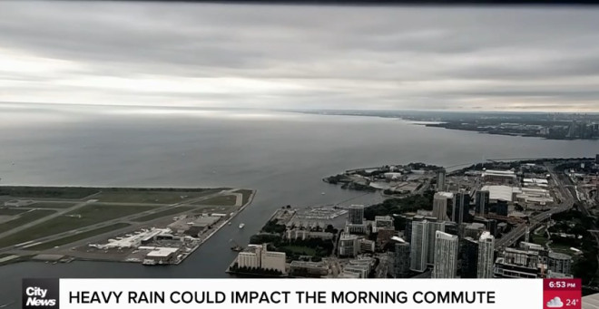
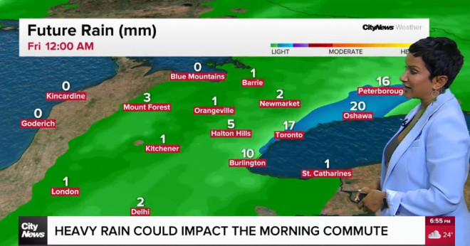
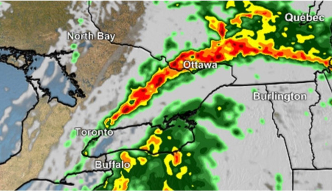

由于热带风暴黛比（Debby）带来的降雨预计将于周五席卷多伦多、大多伦多和汉密尔顿地区部分地区，因此环境部针对该地区发布特殊天气预报。

图源：citynews
加拿大环境部表示，预计周四晚间开始降雨并持续至周五，部分地区降雨量将达50毫米，有时甚至会达到强降雨。
环境部表示：预计低压系统今天将给安省西南部和金马蹄地区带来强降雨。暴雨可能引发洪水和道路积水。低洼地区可能会出现局部洪灾。

图源：citynews
680 News Radio多伦多气象学家Jill Taylor表示，周五早上大多伦多地区将迎来阵雨和雷暴天气。目前，预计多伦多将下雨约10毫米，大多伦多地区北部和东部的降雨量更大。
预计下午风暴将逐渐消散。
与此同时，热带风暴黛比的残余正在与五大湖上空的另一个低压系统合并，可能给加拿大东部部分地区带来高达100毫米的降雨。

图源：CP24
预计黛比飓风的残留将于周五晚抵达新不伦瑞克省，截至周六早上降雨量将达到40毫米。
加拿大环境和气候变化部的国家预警准备气象学家Jennifer Smith表示，强降雨可能导致城市环境中的局部洪水。她表示，渥太华、蒙特利尔，甚至可能包括多伦多等大城市中心可能会受到“重大影响”。
她说，由于城市环境在短时间内无法有效排水，可能会发生局部洪水。
就在三周前，多伦多经历了广泛的洪水和停电，短短三小时内降雨量接近100毫米。
市区部分地下室被淹，部分Gardiner Expressway和the Don Valley Parkway的路段因洪水淹没而关闭，导致一些驾车者被困。
加拿大环境部表示，周五早晨和今天下午早些时候，多伦多将迎来最强降雨。